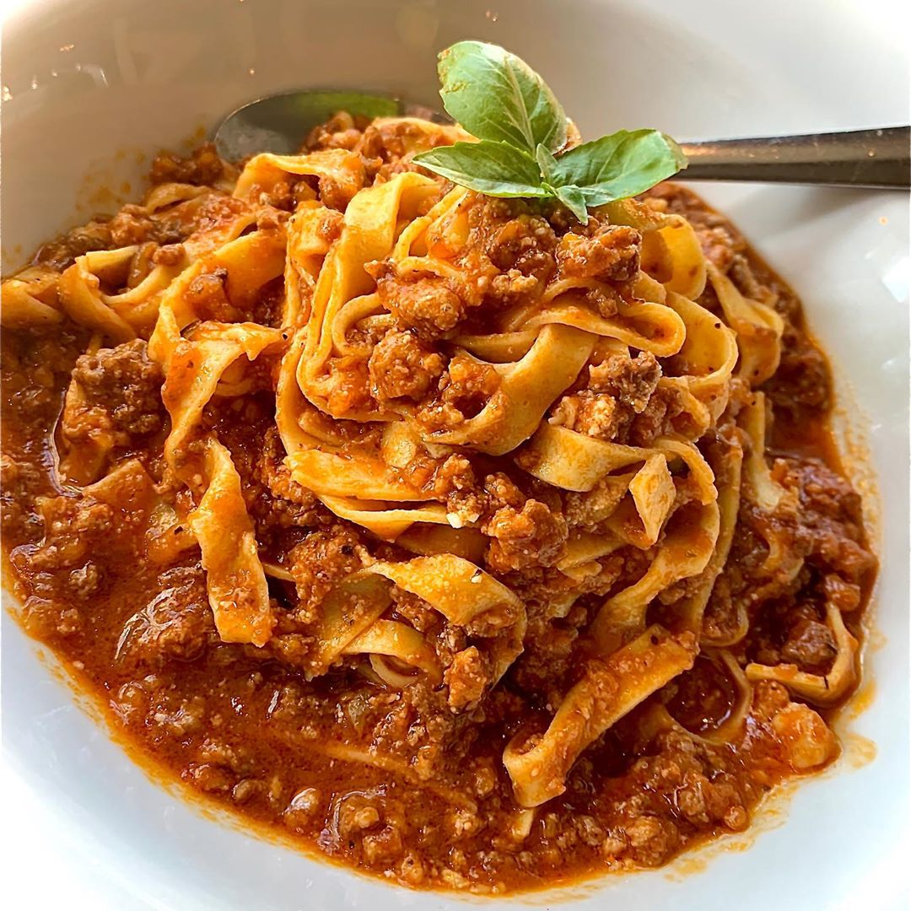

Ragù!!!!!! sembra buono...

..ora lo prepariamo ok.....
a me piace tanto e spesso lo mangio in due persone quindi ora ti dico gli ingredienti per due persone poi fai tu..
Ingredienti (o quello che hai insomma)
- Carne macinata - 300g
- Passata di pomodoro - 300granni
- Carote - alcune
- Cipolle - si
- Latte - no il latte no ho sbagliato a scrivere volevo dire il vino rosso
- Pepe - vero! lo devo comprare..
- sale - quanto.bisogna
- olio - un cucchiaio di legno
ProcedimentooooooOOOOOOOOOOOOOOAAAHAAAHHHHHHHHHHHHHHHHHHFAMALEEEEEEEEEEEEAIUTOOOOOOOOOOOO
- allora prendi la pentola che non è negli ingredienti ma la devi avere e ci metti lolio
- poi dopo metti le cipolle e le carote. spero che le hai tagliate prima !!!!!
- poi ti fai una partita su ruzzle e quando finisci metti la carne e fai andale andale, la muovi insomma
- sfuma con il vino! e se non ti fai vedere da me puoi anche berne un sorso ahah.. n o n t i g i r a r e
- se non l'hai ancora fatto ringrazia la terra che ha partorito gli alberi con cui hanno fatto i soldi che ti hanno permesso di comprare un animale morto e macinato; metti il macinato dentro la pentola grazie macinato
- metti la passata che ha avuto la cortesia si salutare questa volta a differenza di alcuni BALORDI che stanno leggendo questa ricetta
- salutami
- grazie
- ora fai un paio di run su isaac, mi raccomando hard mode no greed fai le run per i completion mark, dio quanto odi o queli che non fanno le run per i completion mark:)
- appena ha ifinito metti tutto nella pasta! non ti spiego come si fa la pasta mi scoccia e poi metti anche un po di brodo nel sugo se si riduce
- buon appetito....a chi se lo merita....
- e ci siamo capiti....
- chi sa..... SA!!!!!!!!!!!
Home(casa :3)